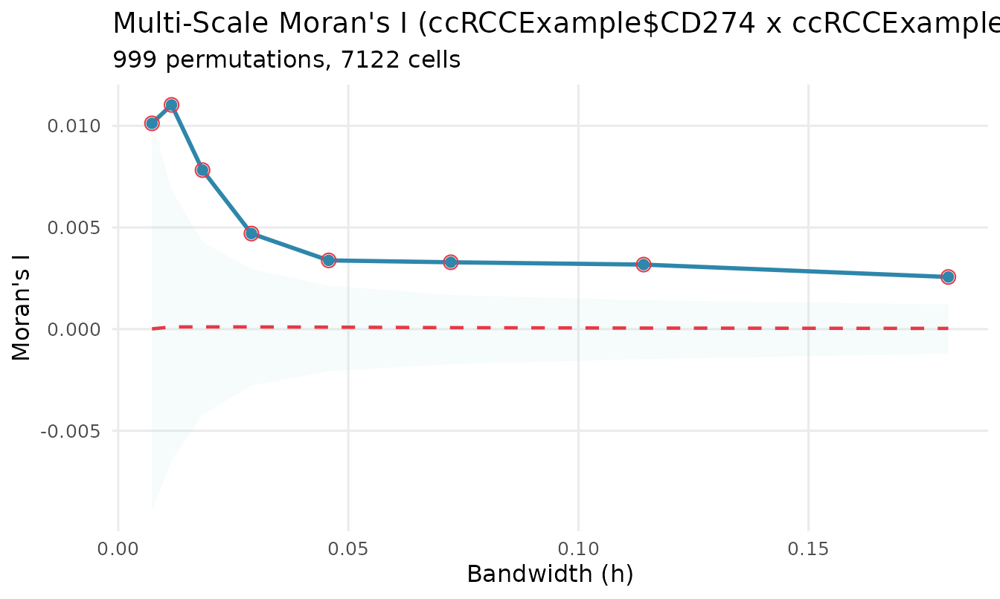
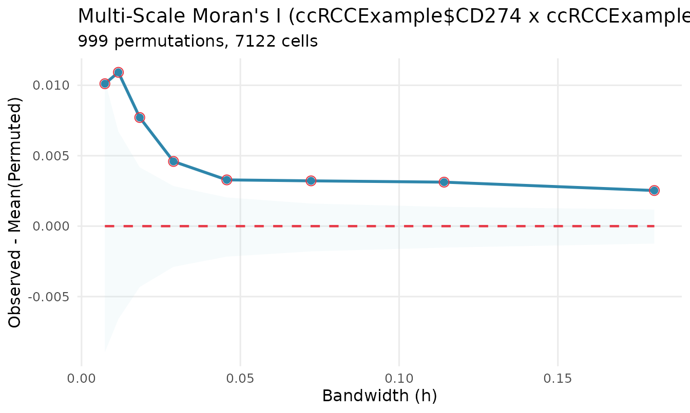
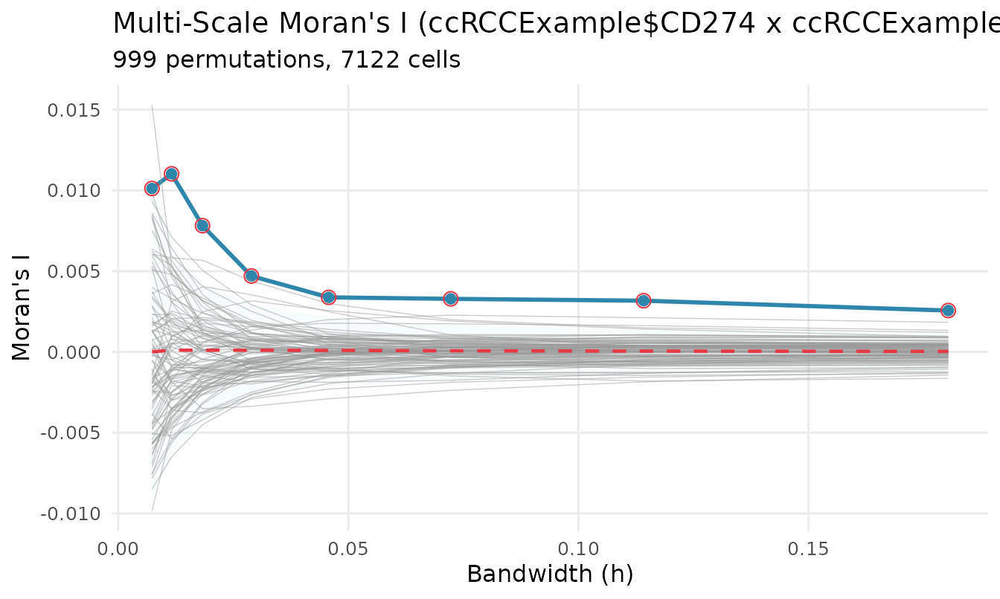
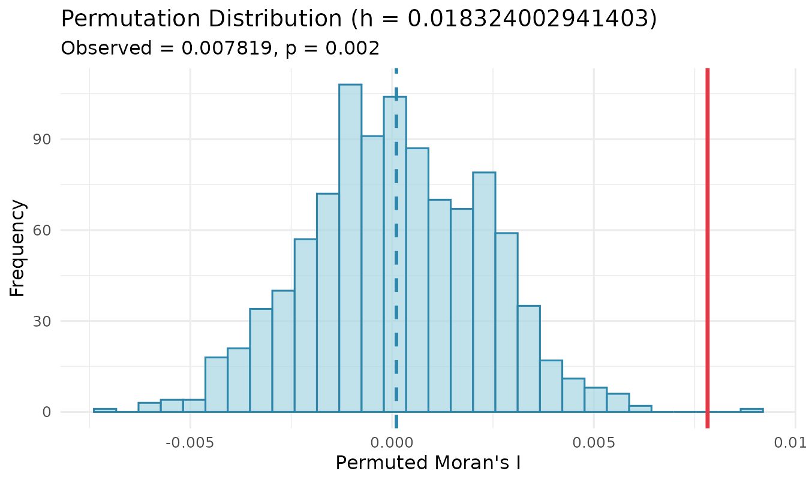
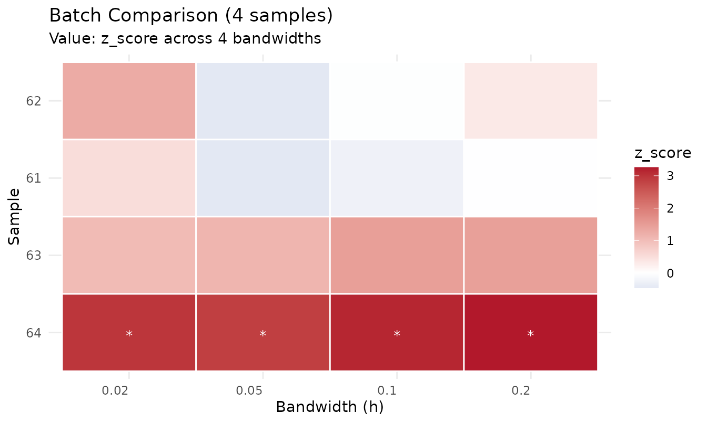

vignettes/multiScaleAC.Rmd
multiScaleAC.Rmd
library(multiScaleAC)
data(ccRCCExample)Bivariate Moran’s I measures whether one gene’s expression at a location coincides with a second gene’s expression nearby. “Nearby” has to be defined, and the usual definitions — a radius, a k-nearest-neighbour count, a single kernel bandwidth — each impose a scale that the analyst has to pick. The answer then depends on that choice.
multiScaleAC() computes the statistic across a range of
Gaussian kernel bandwidths, giving a curve
rather than a point. The scale becomes something you read off the result
instead of something you assume.
Weights are taken directly from the kernel, row standardised, with no minimum weight threshold. Every pair of cells contributes something.
Bandwidths are in the units of your coordinates, and getting the scale wrong is the single most common way to produce a confidently meaningless result.
The bundled data is a clear-cell renal cell carcinoma CosMx core, with coordinates in millimetres:
coords <- as.matrix(ccRCCExample[, c("x", "y")])
range(coords[, 1])
#> [1] 2.354103 3.374326
diff(range(coords[, 1])) # the whole core is about 1 mm across
#> [1] 1.020223So a bandwidth of 1 already spans the entire sample, and a bandwidth of 25 is twenty-five times wider than the tissue. Here is what that does:
qc_neighborhoods(coords[1:2000, ], h = c(0.005, 0.02, 0.1, 0.25, 25))
#> h mean_neighbors sd_neighbors min_neighbors max_neighbors isolated_cells
#> 1 0.005 1.131364 0.51903876 5.623689e-07 3.263373 0
#> 2 0.020 26.230316 7.29510022 6.985108e-01 40.065863 0
#> 3 0.100 468.875557 134.58407821 1.236194e+02 688.525032 0
#> 4 0.250 1320.994977 176.14368698 7.028257e+02 1584.652226 0
#> 5 25.000 1998.900466 0.03763422 1.998735e+03 1998.950225 0
#> percent_isolated saturation
#> 1 0 0.0006
#> 2 0 0.0131
#> 3 0 0.2344
#> 4 0 0.6605
#> 5 0 0.9995Read the saturation column. It is the mean kernel row
sum as a fraction of the sample size — the share of the sample each cell
effectively treats as its neighbourhood. At h = 25 it is
0.9995: every cell is everyone’s neighbour, the weight matrix is
essentially constant, and a constant weight matrix cannot detect spatial
structure.
collapses toward zero no matter what the biology is.
At the other end, h = 0.005 gives about one effective
neighbour per cell, which is too few to be stable.
Let the data suggest the range:
h <- suggest_bandwidths(coords, n_bandwidths = 8, range = "medium")
round(h, 4)
#> [1] 0.0073 0.0116 0.0183 0.0290 0.0457 0.0723 0.1142 0.1804
#> attr(,"scale_reference")
#> median_nn_distance extent
#> 0.00734108 1.44298327
attr(h, "scale_reference")
#> median_nn_distance extent
#> 0.00734108 1.44298327median_nn_distance is the typical distance to a cell’s
nearest neighbour and extent is the span of the sample; the
suggestions are spaced geometrically between the two, because the
statistic responds to neighbourhood area rather than to
h linearly.
If your coordinates are in micrometres rather than millimetres, every
number above is a thousand times larger. The manuscript’s stated range
of 10–250 is in micrometres, which is
0.01–0.25 in this dataset’s units. That is the
same range, described in different units — and it is exactly the
confusion to watch for.
res <- multiScaleAC(
coords, ccRCCExample$CD274, ccRCCExample$PDCD1,
h = h, perms = 999
)
res
#> multiScaleAC result
#> ===================
#> Sample: sample1
#> Gene pair: ccRCCExample$CD274 x ccRCCExample$PDCD1
#> Bandwidths: 8 values from 0.00734 to 0.18
#> Permutations: 999
#> Cells: 7122
#> Significance: Not computed (use compute_significance())The result carries only the raw computation. Inference is a separate step, so you can compute once and test in several ways.
res <- compute_significance(res)
summary(res)
#> h observed perm_mean perm_sd z_score p_value p_adjusted
#> 1 0.00734108 0.010120406 1.021102e-05 0.0049995481 2.022222 0.031 NA
#> 2 0.01159819 0.011027912 1.076478e-04 0.0033586257 3.251409 0.001 NA
#> 3 0.01832400 0.007818671 1.072736e-04 0.0022088995 3.491059 0.002 NA
#> 4 0.02895013 0.004698954 1.065065e-04 0.0014897894 3.082615 0.002 NA
#> 5 0.04573838 0.003379124 9.509357e-05 0.0010758516 3.052493 0.002 NA
#> 6 0.07226216 0.003286789 7.076452e-05 0.0008600767 3.739230 0.001 NA
#> 7 0.11416714 0.003172932 4.936920e-05 0.0007400606 4.220685 0.001 NA
#> 8 0.18037291 0.002563568 3.351514e-05 0.0006160637 4.106803 0.001 NA
#> significant null_lower null_upper
#> 1 TRUE -0.008941486 0.010350573
#> 2 TRUE -0.006485544 0.006826046
#> 3 TRUE -0.004211881 0.004284877
#> 4 TRUE -0.002781966 0.002952149
#> 5 TRUE -0.002068991 0.002132633
#> 6 TRUE -0.001722713 0.001675461
#> 7 TRUE -0.001475067 0.001419540
#> 8 TRUE -0.001206299 0.001214297
plot(res)
The solid line is the observed . The dashed line is the mean of the permutation distribution, which is analytically zero. The shaded band is the null envelope: quantiles of the permutation distribution, showing where the statistic would fall under complete spatial randomness. Observed values outside the band are evidence against the null.
It is not a confidence interval for the observed curve. That
distinction is why the slots are called null_lower and
null_upper.
Subtracting the null mean is often easier to read, and is what the manuscript plots:
plot(res, type = "difference")
To see directly whether the observed curve is unusual, draw some of the null curves behind it:
plot_scale_curve(res, show_permutations = TRUE, show_permutations_n = 100)
And the null distribution at a single bandwidth:
plot_permutation_distribution(res, h_index = 3)
Testing every bandwidth separately raises a multiplicity problem, and
correcting for it is awkward because the tests are strongly dependent:
the kernels are nested on the same cells and the same permutations.
adjust_pvalues() will apply a correction across bandwidths
if you want one, but it is conservative and hard to interpret.
The manuscript’s whole-curve supremum test avoids the issue by asking one question of the entire curve. It is computed by default:
res@sup_statistic
#> [1] 4.220685
res@sup_p_value
#> [1] 0.001For a screen over many gene pairs, this is usually the number you want per pair, with FDR applied across pairs.
The default is "greater", a one-tailed upper test,
matching the manuscript. Use "two.sided" if depletion — one
gene surrounded by less of the other than chance — is also of
interest, since the upper-tail test cannot see it:
two <- compute_significance(res, alternative = "two.sided")
#> Warning: significance was already computed; recomputing with the new parameters
data.frame(h = round(res@h, 3), greater = res@p_values, two_sided = two@p_values)
#> h greater two_sided
#> 1 0.007 0.031 0.044
#> 2 0.012 0.001 0.002
#> 3 0.018 0.002 0.002
#> 4 0.029 0.002 0.002
#> 5 0.046 0.002 0.002
#> 6 0.072 0.001 0.001
#> 7 0.114 0.001 0.001
#> 8 0.180 0.001 0.001z_scores is an effect size, standardising the observed
value by the permutation mean and standard deviation. It is tempting to
convert it with pnorm(). Do not.
The permutation null of this statistic is skewed whenever the expression data is skewed, which for zero-inflated single-cell measurements is the ordinary case:
round(res@moment_skewness, 3)
#> [1] 0.261 0.160 0.088 0.030 -0.007 -0.029 -0.042 -0.044Those are exact skewness values, not estimates (see below). Where they are appreciable, a symmetric normal tail is wrong, and it is wrong in the dangerous direction: on this dataset a normal approximation understates the upper tail by two orders of magnitude at the thresholds an FDR screen operates at. Use the permutation p-values, or the moment-based ones, which model the skewness.
Because the weight matrix is row standardised and both genes are
z-scored, the statistic is a linear permutation
statistic — a fixed vector paired with a random permutation of
another. Such statistics have closed-form moments. So the mean,
variance, skewness and kurtosis of the null, and the whole
cross-bandwidth covariance matrix, are available exactly, at
O(N) cost per bandwidth, and are computed by default:
data.frame(
h = round(res@h, 4),
variance = signif(res@moment_var, 3),
skewness = round(res@moment_skewness, 3),
leverage = round(res@leverage, 4)
)
#> h variance skewness leverage
#> 1 0.0073 2.55e-05 0.261 0.0451
#> 2 0.0116 1.12e-05 0.160 0.0180
#> 3 0.0183 4.86e-06 0.088 0.0054
#> 4 0.0290 2.23e-06 0.030 0.0027
#> 5 0.0457 1.16e-06 -0.007 0.0010
#> 6 0.0723 7.29e-07 -0.029 0.0010
#> 7 0.1142 5.38e-07 -0.042 0.0012
#> 8 0.1804 3.77e-07 -0.044 0.0009leverage is the largest single cell’s share of the null
variance. It is the diagnostic for whether a smooth approximation to the
null can be trusted: values near 1 mean one cell dominates the statistic
and no continuous approximation will hold. It falls as bandwidth grows,
which is why small bandwidths are the unstable end of the curve.
You can skip permutations entirely:
fast <- multiScaleAC(coords, ccRCCExample$CD274, ccRCCExample$PDCD1,
h = h, permute = "none")
fast <- compute_significance(fast, method = "moment")
#> the supremum test needs permutations at every bandwidth; skipping it because permute = "flagged" or "none" left some unpermuted
data.frame(h = round(h, 4),
permutation = signif(res@p_values, 3),
moment = signif(fast@p_values, 3))
#> h permutation moment
#> 1 0.0073 0.031 2.91e-02
#> 2 0.0116 0.001 1.09e-03
#> 3 0.0183 0.002 3.48e-04
#> 4 0.0290 0.002 9.53e-04
#> 5 0.0457 0.002 8.36e-04
#> 6 0.0723 0.001 4.45e-05
#> 7 0.1142 0.001 4.13e-06
#> 8 0.1804 0.001 8.32e-06Or permute only where the diagnostics say it is necessary, and let
method = "auto" choose per bandwidth:
mixed <- multiScaleAC(coords, ccRCCExample$CD274, ccRCCExample$PDCD1,
h = h, perms = 999, permute = "flagged")
mixed <- compute_significance(mixed, method = "auto")
#> the supremum test needs permutations at every bandwidth; skipping it because permute = "flagged" or "none" left some unpermuted
data.frame(h = round(h, 4), method = mixed@p_method, p = signif(mixed@p_values, 3))
#> h method p
#> 1 0.0073 moment:gamma 2.91e-02
#> 2 0.0116 moment:gamma 1.09e-03
#> 3 0.0183 moment:gamma 3.48e-04
#> 4 0.0290 moment:gamma 9.53e-04
#> 5 0.0457 moment:gamma 8.36e-04
#> 6 0.0723 moment:gamma 4.45e-05
#> 7 0.1142 moment:gamma 4.13e-06
#> 8 0.1804 moment:gamma 8.32e-06Not speed. For one gene pair the kernel sweep dominates, so dropping permutations saves roughly 1.7× on memory and about a tenth of the wall clock.
What it buys is resolution. With
perms = 999 the smallest p-value expressible is
1/1000, so p = 0.001 and p = 1e-6
are indistinguishable, and reaching 1e-5 requires around
100,000 permutations. The moment route has no such floor, and it is
accurate there: it matches a 499,999-permutation run to under 1%.
The moments are exact; turning them into a tail probability is not.
The default mapping was chosen by measuring four candidates against
200,000 permutations, and inst/validation/results/README.md
records what won, what lost, and two outcomes that contradict what
theory would predict.
fovs <- split(ccRCCExample, ccRCCExample$fov)
fovs <- fovs[vapply(fovs, nrow, integer(1)) > 200]
fovs <- fovs[1:4]
results <- multiScaleAC_batch(
fovs, h_vec = c(0.02, 0.05, 0.1, 0.2), perms = 199, verbose = FALSE
)
results <- lapply(results, compute_significance)
plot_batch_comparison(results, value_var = "z_score")
For long batches, pass checkpoint_dir and the run
becomes resumable: each sample is written as it completes, and
re-running skips what is already done. On Unix, n_cores
forks.
A curve per gene pair is what makes functional data analysis natural, and it is what the manuscript does — functional principal component analysis over the interaction curves, then a test on the first component.
mx <- export_mxfda(results[[1]], sample_id = names(results)[1])
head(mx)
#> sample_id interaction_name r sumfun csr fundiff
#> 1 61 CD274_PDCD1 0.02 1.193851e-03 -2.441687e-04 1.438020e-03
#> 2 61 CD274_PDCD1 0.05 -4.103171e-04 3.247347e-05 -4.427906e-04
#> 3 61 CD274_PDCD1 0.10 -6.296169e-05 4.898552e-05 -1.119472e-04
#> 4 61 CD274_PDCD1 0.20 1.517053e-05 1.749815e-05 -2.327625e-06
#> p_value z_score null_lower null_upper p_adjusted
#> 1 0.305 0.51516720 -0.0049754771 0.0049444200 NA
#> 2 0.680 -0.45713735 -0.0016211165 0.0021187807 NA
#> 3 0.610 -0.27133436 -0.0007896213 0.0007544154 NA
#> 4 0.500 -0.01322554 -0.0003442926 0.0003247194 NAThe columns match what mxfda::add_summary_function()
expects. One caveat worth knowing: the bandwidth is placed in mxfda’s
radius column r, and a bandwidth is not a radius — a radius
is a hard cutoff, a Gaussian bandwidth is an unbounded scale. The
substitution is fine for a functional analysis over nested scales, but
these curves should not be pooled with radius-based summary functions
such as Ripley’s K. See ?export_mxfda.
soupir_moran_multi() is the reference implementation,
and stays supported permanently. It is not deprecated. It is also the
oracle for the whole test suite: every fixture is generated from it, and
a test detects any change to it.
ref <- soupir_moran_multi(coords[1:400, ], ccRCCExample$CD274[1:400],
ccRCCExample$PDCD1[1:400],
h_vec = c(0.05, 0.1), perms = 99, seed = 333)
new <- multiScaleAC(coords[1:400, ], ccRCCExample$CD274[1:400],
ccRCCExample$PDCD1[1:400],
h = c(0.05, 0.1), perms = 99, seed = 333)
max(abs(ref$observed - new@observed))
#> [1] 6.505213e-18
sessionInfo()
#> R version 4.6.2 (2026-10-29)
#> Platform: x86_64-pc-linux-gnu
#> Running under: Ubuntu 24.04.5 LTS
#>
#> Matrix products: default
#> BLAS: /usr/lib/x86_64-linux-gnu/openblas-pthread/libblas.so.3
#> LAPACK: /usr/lib/x86_64-linux-gnu/openblas-pthread/libopenblasp-r0.3.26.so; LAPACK version 3.12.0
#>
#> locale:
#> [1] LC_CTYPE=C.UTF-8 LC_NUMERIC=C LC_TIME=C.UTF-8
#> [4] LC_COLLATE=C.UTF-8 LC_MONETARY=C.UTF-8 LC_MESSAGES=C.UTF-8
#> [7] LC_PAPER=C.UTF-8 LC_NAME=C LC_ADDRESS=C
#> [10] LC_TELEPHONE=C LC_MEASUREMENT=C.UTF-8 LC_IDENTIFICATION=C
#>
#> time zone: UTC
#> tzcode source: system (glibc)
#>
#> attached base packages:
#> [1] stats graphics grDevices utils datasets methods base
#>
#> other attached packages:
#> [1] multiScaleAC_0.2.0
#>
#> loaded via a namespace (and not attached):
#> [1] gtable_0.3.6 jsonlite_2.0.0 dplyr_1.2.1 compiler_4.6.2
#> [5] tidyselect_1.2.1 Rcpp_1.1.2 jquerylib_0.1.4 systemfonts_1.3.2
#> [9] scales_1.4.0 textshaping_1.0.5 yaml_2.3.12 fastmap_1.2.0
#> [13] ggplot2_4.0.3 R6_2.6.1 labeling_0.4.3 generics_0.1.4
#> [17] knitr_1.52 tibble_3.3.1 desc_1.4.3 bslib_0.12.0
#> [21] pillar_1.11.1 RColorBrewer_1.1-3 rlang_1.3.0 cachem_1.1.0
#> [25] xfun_0.62 fs_2.1.0 sass_0.4.10 S7_0.2.2
#> [29] otel_0.3.0 cli_3.6.6 withr_3.0.3 pkgdown_2.2.1
#> [33] magrittr_2.0.5 digest_0.6.39 grid_4.6.2 lifecycle_1.0.5
#> [37] vctrs_0.7.3 evaluate_1.0.5 glue_1.8.1 farver_2.1.2
#> [41] ragg_1.5.2 rmarkdown_2.32 tools_4.6.2 pkgconfig_2.0.3
#> [45] htmltools_0.5.9